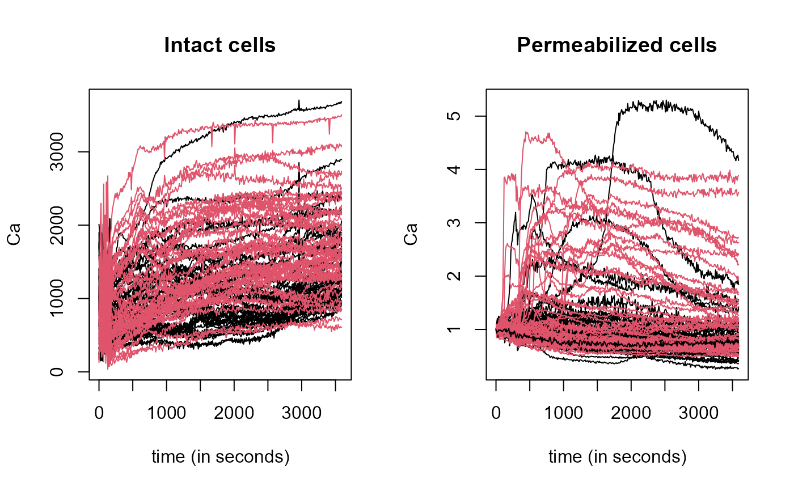

The mithochondiral calcium overload (MCO) was measured in two groups (control and treatment) every 10 seconds during an hour in isolated mouse cardiac cells. In fact, due to technical reasons, the original experiment [see Ruiz-Meana et al. (2000)] was performed twice, using both the "intact", original cells and "permeabilized" cells (a condition related to the mitochondrial membrane).
Format
Elements of MCO:..$intact: fdata class object with
“intact cells”curves,
"data": Matrix of classfdatawith 89 intact cells curves (rows) measured every 10 seconds during an hour in isolated mouse cardiac cell."argvals", 360 discretization points from seond 0 to 3590."rangeval": range("argvals")."names"list with:mainan overall title "Control Intact Treatment",xlabtitle forxaxis "seconds" andylabtitle foryaxis "Ca".
..$classintact: Factor levels of “intact cells” curves: "1" control
group and "2" treatment group.
..$permea: fdata class object with “permeabilized cells”
curves (whose membrane has been removed),
"data": Matrix of classfdatawith 90 permeabilizzed cells curves (rows) measured every 10 seconds during an hour in isolated mouse cardiac cell."argvals", 360 discretization points from seond 0 to 3590."rangeval": range("argvals")."names"list with:mainan overall title "Control Intact Treatment",xlabtitle forxaxis "seconds" andylabtitle foryaxis "Ca".
..$classpermea: Factor levels of “permeabilized cells”
curves: "1" control group and "2" treatment group.
Note
The structure of the curves during the initial period (first 180 seconds) of the experiment shows a erratic behavior (not very relevant in the experiment context) during this period.
References
Ruiz–Meana M, Garcia-Dorado D, Pina P, Inserte J, Agullo L, Soler–Soler J. Cariporide preserves mitochondrial proton gradient and delays ATP depletion in cardiomyocytes during ischemic conditions. American Journal Physiology Heart Circulatori Physiology. 2003 Sep;285(3):H999–1006.
Examples
data(MCO)
names(MCO)
#> [1] "intact" "permea" "classintact" "classpermea"
par(mfrow=c(1,2))
plot.fdata(MCO$intact, col=MCO$classintact)
plot.fdata(MCO$permea, col=MCO$classintact)
